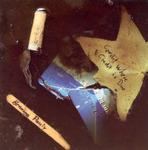

| Artist: | Henning Pauly |
| Title: | Credit Where Credit Is Due |
| Label: | Progrock Records 8 37792 00931 3 |
| Length(s): | 75 minutes |
| Year(s) of release: | 2005 |
| Month of review: | [10/2007] |
| 1) | Your Mother Is A Trucker | 3.59 |
| 2) | Cure The Breach | 4.32 |
| 3) | Three | 5.33 |
| 4) | ScheiBlautundhartwiedreck | 6.09 |
| 5) | I Don't Wanna Be A Rock Star | 4.53 |
| 6) | Six | 4.13 |
| 7) | Seven | 4.17 |
| 8) | Radio Sucks | 5.33 |
| 9) | Halo | 10.44 |
| 10) | @opyright Conspiracy | 4.51 |
| 11) | German Metalhead | 6.55 |
| 12) | I Like My Video Games | 4.10 |
| 13) | Bonustrack | 14.04 |
Cure The Breach continues in this vein with heavly rhythmic rock, spiced with guitar effects and overal a somewhat psyche feel. On the other hand, the music can as easily be likened to nu-metal outfits, e.g., Linkin Park. The rap vocals, also present, are female. Some of the pop vocal melodies remind me of Depeche Mode. The elements, thus, are not very proggy, but the combination and alternation is not often seen on the charts.
The same guitar effects arise on Three, which is altogether somewhat different though. The music is slower, less loud (generally), and more melodic. The strongest influence is again Saga, mainly because of the vocal parts. Strangely enough the continuation of the song has folky Spanish guitars combines with the vacuumcleaner sound of rhythm guitars and operatic vocals.
ScheiBlautundhartwiedreck shows that there might be some German roots to Pauly's heritage. We are back in the nu-metal arena, with some great vocal melodies. I guess a song like could really make it big (with all the doses of luck and money necessary for commercial success). Notwithstanding, the song has its prog(metal) elements as well, with a thunderous drive and chanted choir vocals.
Having heard the first few songs, I am not so sure anymore about I Don't Wanna Be A Rock Star. Both artwork and lyrics are full of self irony, so it is hard to interpret what it is Pauly really wants. Again, this is a loud and catchy rock tune, with powerful chords. We close with acoustic guitar, somewhat groovy.
Six is track number six, like Three was number three and Seven is yes, number seven. Seems that Pauly could not come up with a name for these songs and simply gave them the track number as name. One might expect instrumentals, but that is not the case. Behind all the heavy guitars, we also have folky mandolin? rambling along. Time for a bit of relaxing with Seven. It opens with a friendly and excellent piano line, followed by Sadler like vocals. The vocals are emotionally sung, and the song has more modern elements: the transformed drum sounds, the electronics. The sweeping majesty of the vocal melodies stays, but Pauly pumps in quite a few extra decibels of noise. But it works. The best song so far.
Radio Sucks is a more catchy tune, following on the track of I Don't Wanna Be A Rock Star. This is Pauly lite, with a nice catchy chorus, but not much more. As is often the case, the music is strongly percussive.
Halo is the longest song on the album, reaching the ten minute mark. It is also the slowest starter, with mainly cosmic tones in the beginning and a somewhat Enigma like feel even at some point. Slowly the song builds up with its Eastern vocal elements, and a rather folky overall feel: lots of repetition melodiwise, optimistic and almost like a dance. The vocals are very quiet again, here the music drops out almost totally. The only thing left is percussion. The chorus is an operatice one, reminiscent of the likes of Saviour Machine, but sung somewhat higher. It does imply we are back in progmetal country, although the rhythmic and electronic side of things is not so typical. The intermezzo past halfway brings us back to the opening. The song has its moments, but also parts in which it could not hold me attention.
©opyright Conspiracy seems to continue the lyrical line of Radio Sucks. This is a rather boring metal track in which the vocals are a bit rowdier than before. German Metalhead again seems to refer to Pauly's heritage (he also looks German on the photograph on the backside where he is being attacked by a stapler). The opening is a bleepy one, accented with heavy power chords. The song has a rap intermezzo as well. References are Nine Inch Nails with some Linkin Park and Rammstein. The closer I Like My Video Games is a catchy AORish tune.
Bonustrack is called Bonusdreck in iTunes, and I guess there is something to be said for the title. These are sound snippets combined with German spoken vocals. Not to be taken seriously.